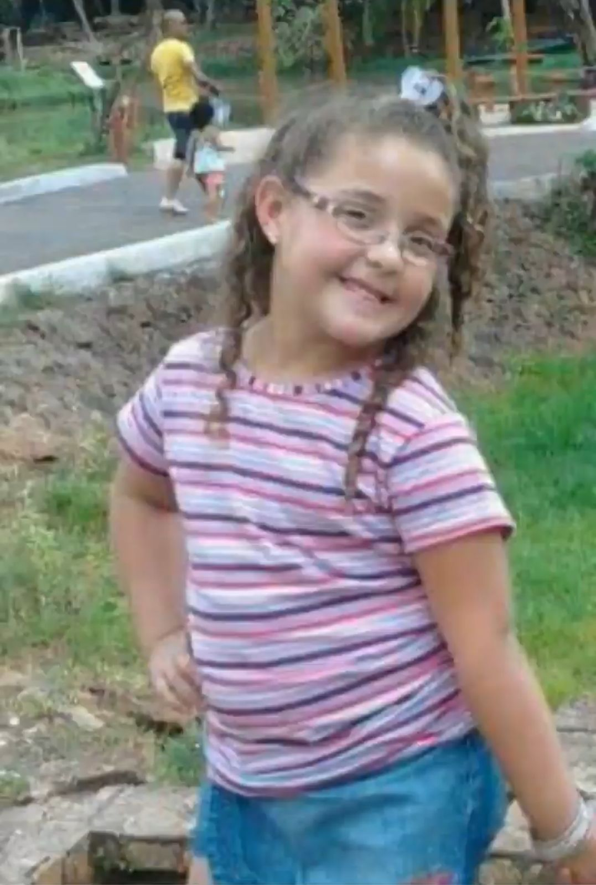
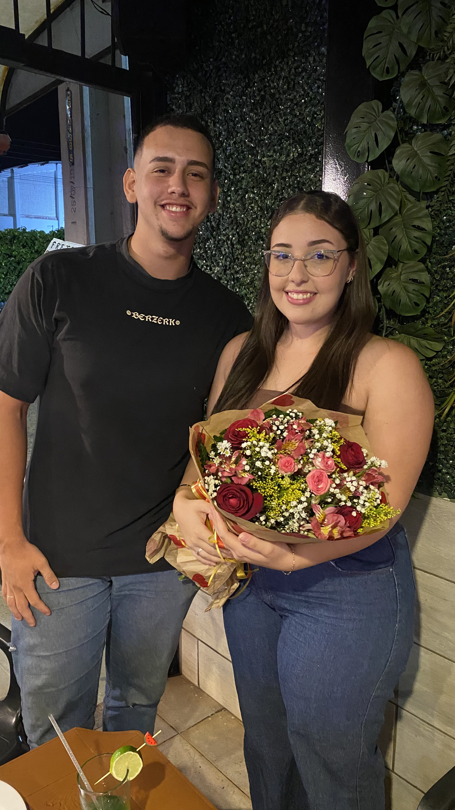
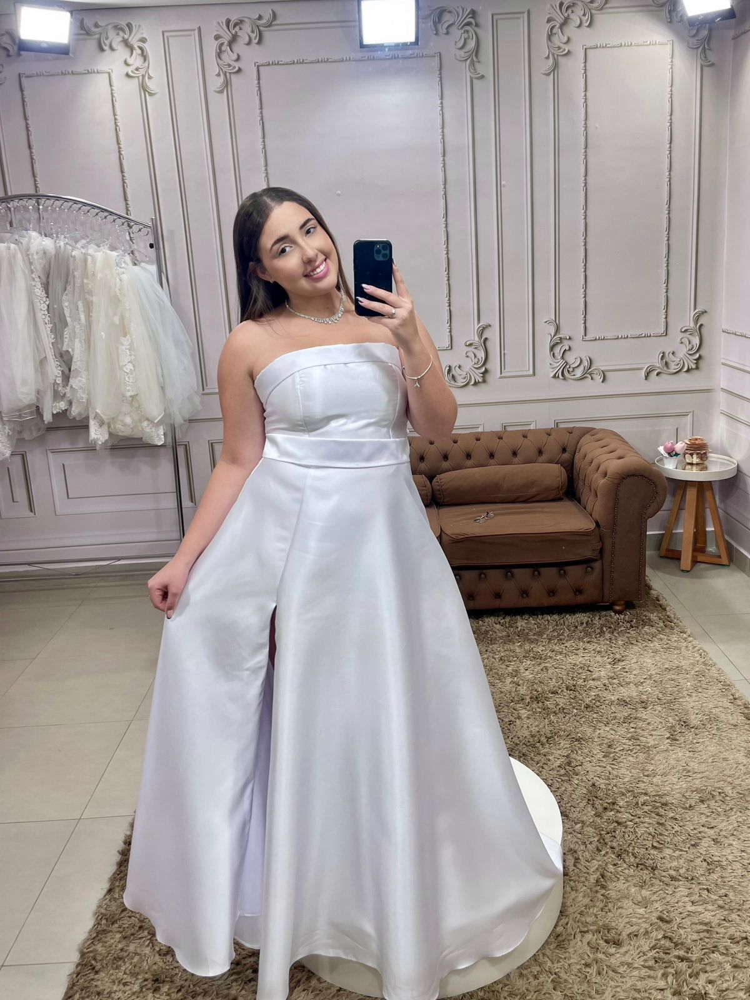

Neste momento, nossos caminhos estão separados para que eu possa me reerguer e amadurecer como homem. Mas eu precisava deixar registrado o quanto você foi e sempre será importante para mim.
Esta declaração é dedicada, antes de tudo, à menininha que existe dentro de você. Aquela criança pura, cheia de sonhos e luz, que sempre mereceu sorrir e ser imensamente feliz.
Eu sei que, infelizmente, deixei meus problemas pessoais tomarem conta de mim. No processo de me perder e estragar as coisas na minha vida, acabei machucando você e tirando a sua alegria — e essa é a minha maior dor hoje.
Enquanto eu busco me resolver, me curar e me tornar a pessoa que você realmente merece ter ao lado, criei este espaço. Não para te pressionar, mas para honrar o que vivemos, pedir perdão e lembrar a essa sua criança interior que ela é muito amada e especial.

Sua menininha
Sempre mereceu o mundo
Momentos preciosos que marcaram meu coração para sempre.
Aquele dia ficou perfeitamente gravado na minha memória. Uma tarde simples, mas que se tornou um dos meus momentos favoritos. Entre as nossas conversas, as risadas e o vento no rosto, eu olhei para você e soube que a verdadeira felicidade estava ali, exatamente ao meu lado.

Ainda me lembro da surpresa e do brilho nos seus olhos quando te entreguei aquelas flores. Você sempre mereceu as coisas mais lindas e delicadas que o mundo tem a oferecer. Ver o seu sorriso sincero naquele momento encheu meu peito de alegria.

O dia em que você estava trabalhando fazendo o provador de vestidos de noiva mexeu comigo de uma forma profunda. Você parecia uma rainha, a mulher mais deslumbrante que já vi. Mesmo com tudo que estamos passando agora, quero que saiba de uma coisa do fundo do meu coração: eu ainda quero ver você vestida assim, caminhando em minha direção.
Por favor, o meu maior pedido hoje é que você me espere. Me dê o tempo necessário para que eu possa consertar as minhas finanças, colocar a minha vida nos eixos e curar o meu psicológico. Eu quero me tornar o homem forte e seguro que você merece ter ao seu lado.
Eu acredito, com toda a minha fé, que Deus tem um propósito lindo em nossas vidas e na nossa história. Eu nunca vou desistir de nós, porque quem ama de verdade, não desiste. E o meu amor por você suporta qualquer tempestade. Eu te amo!